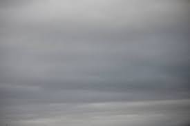
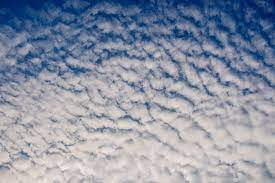
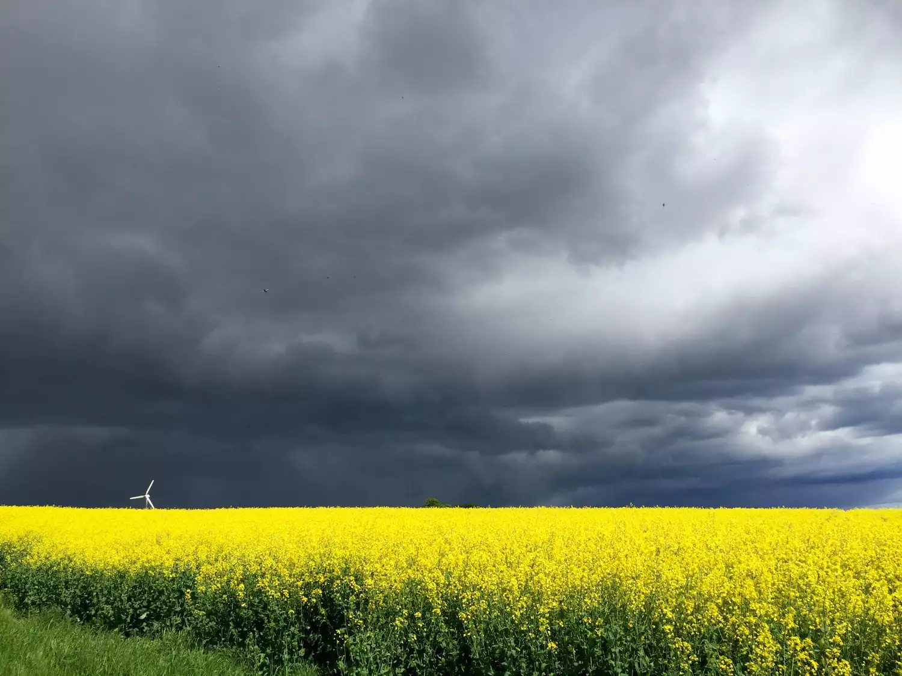
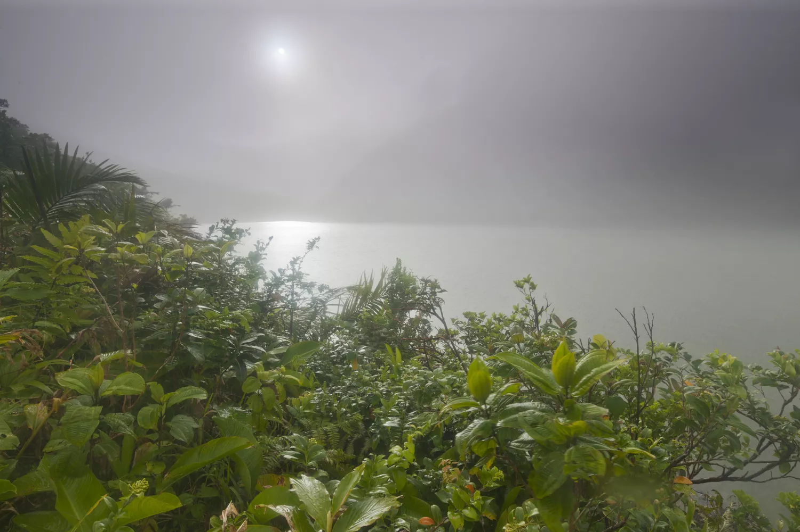
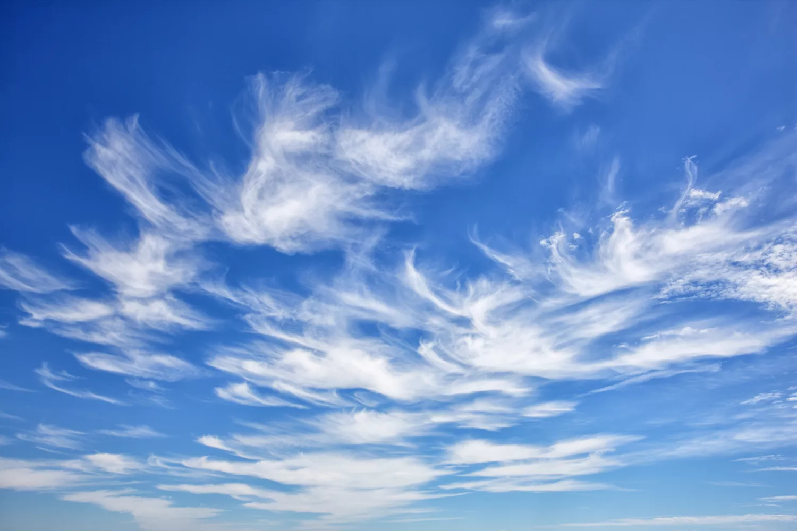
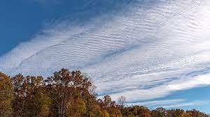
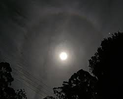
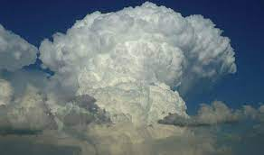

Their tops are rounded, puffy, and a brilliant white when sunlit, while their bottoms are flat and relatively dark. Cumulus clouds develop on clear, sunny days when the sun heats the ground directly below (diurnal convection). This is where they get their nickname of "fair weather" clouds. They appear in the late morning, grow, and then disappear toward evening.
Stratus clouds hang low in the sky as a flat, featureless, uniform layer of grayish cloud. They resemble fog that hugs the horizon (instead of the ground). Stratus clouds are seen on dreary, overcast days and are associated with light mist or drizzle.
Low, puffy, grayish or whitish clouds that occur in patches with blue sky visible in between. When viewed from underneath, stratocumulus have a dark, honeycomb appearance. You're likely to see stratocumulus on mostly cloudy days. They form when there's weak convection in the atmosphere.
You'll recognize them as white or gray patches that dot the sky in large, rounded masses or clouds that are aligned in parallel bands. Altocumulus are often spotted on warm and humid mornings, especially during summer. They can signal thunderstorms to come later in the day.
Nimbostratus clouds cover the sky in a dark gray layer. They can extend from the low and middle layers of the atmosphere and are thick enough to blot out the sun. Nimbostratus are the quintessential rain cloud. You'll see them whenever steady rain or snow is falling (or is forecast to fall) over a widespread area.
Altostratus appear as gray or bluish-gray sheets of cloud that partially or totally cover the sky at mid-levels. Altostratus tend to form ahead of a warm or occluded front. They can also occur together with cumulus at a cold front.
Cirrus are thin, white, wispy strands of clouds that streak across the sky. Because cirrus clouds appear above 20,000 feet (6,096 m)—an altitude where low temperatures and low water vapor exist—they are made up of tiny ice crystals rather than water droplets. Cirrus typically occur in fair weather.
Cirrocumulus clouds are small, white patches of clouds often arranged in rows that live at high altitudes and are made of ice crystals. Cirrocumulus clouds are rare and relatively short-lived, but you'll see them in winter or when it's cold but fair.
Cirrostratus clouds are transparent, whitish clouds that veil or cover nearly the entire sky. A dead giveaway to distinguishing cirrostratus is to look for a "halo" (a ring or circle of light) around the sun or moon. The halo is formed by the refraction of the light on the ice crystals in the clouds, similarly to how sundogs form but in an entire circle rather than just on either side of the sun. Cirrostratus indicate that a large amount of moisture is present in the upper atmosphere. They're also generally associated with approaching warm fronts.
Cumulonimbus clouds are one of the few clouds that span the low, middle, and high layers. Cumulonimbus cloud tops are usually always flattened in the shape of an anvil or plume. Their bottoms are often hazy and dark. Cumulonimbus clouds are thunderstorm clouds, so if you see one you can be sure there's a nearby threat of severe weather.
